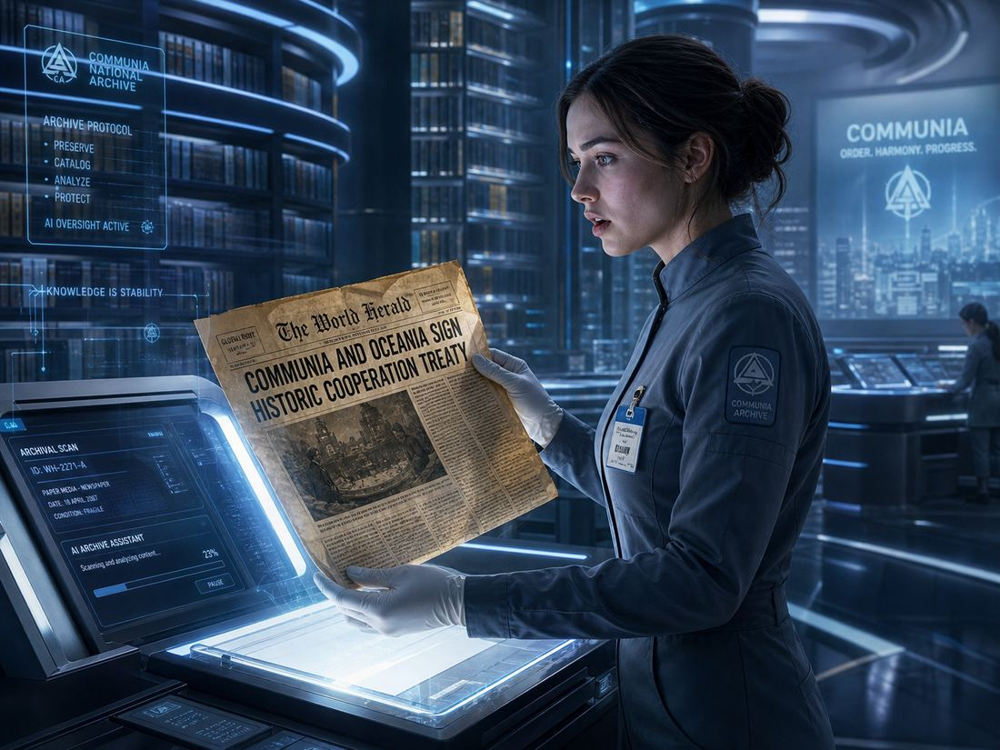
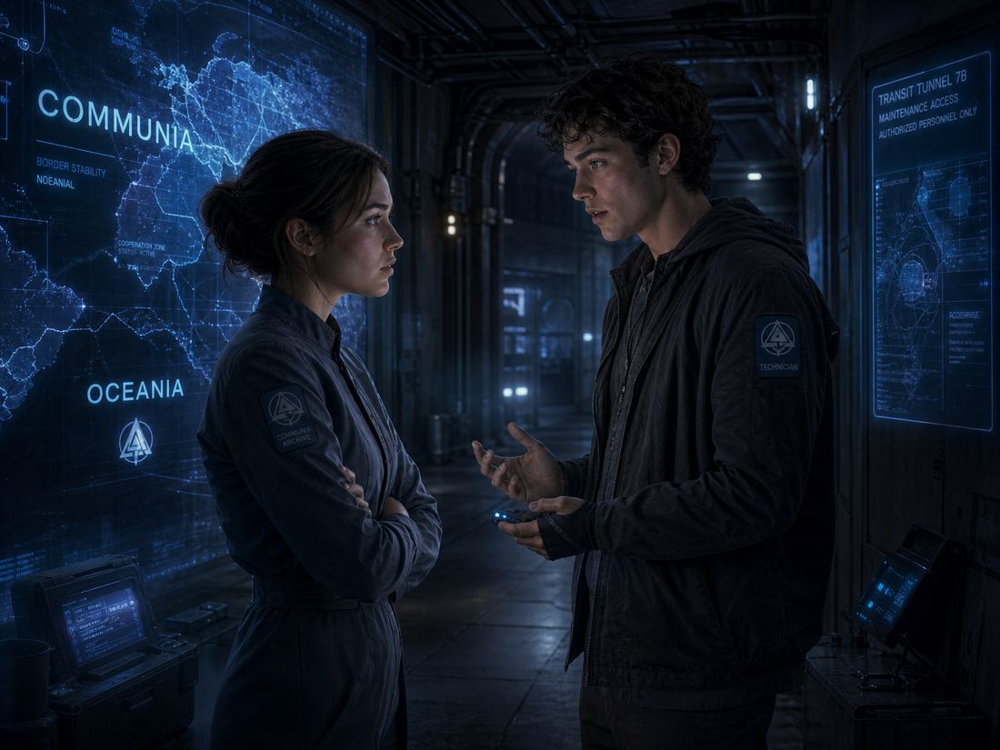
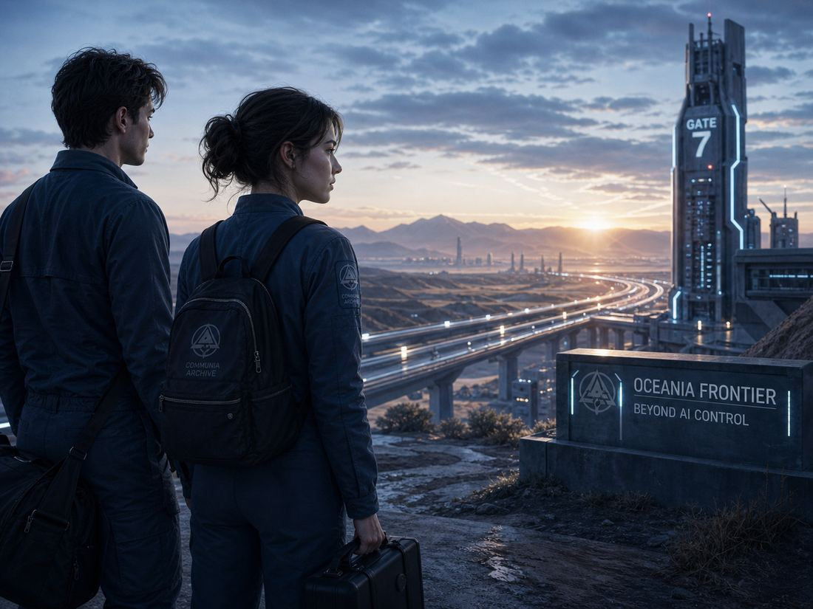

Outside Eden
Clara, an employee in Data Department 0721, found herself unable to muster any enthusiasm for the life she was living. Admittedly, her current life suited her perfectly. In fact, in the Nation of Communia, nearly everyone was satisfied with their lives, for the nation was governed in every aspect by an AI named Winnie—planned production, citizen employment, education, healthcare, and nearly every facet of society's operation was managed by Winnie.
Take Clara's own work as an example: during her university years, Winnie had long since conducted an in-depth assessment of Clara's interests, aptitudes, and personality traits. Thus, upon her graduation, Winnie matched Clara with the position most suited to her. Indeed, Clara herself was quite satisfied with this arrangement.
Clara's job was to digitize the paper materials stored in the library and upload them to the cloud—after all, to an AI, data was life itself. This day marked the 1,034th day since Clara had begun her work. As she was about to scan a yellowed newspaper from the old era, one that looked entirely different from the other documents in the stack, the headline on the front page made her hand stop mid-motion: "Communia and Oceania Shake Hands in Peace; Oceania Declares AI Polity as Justifiable."

The timestamp was Year 2054, March 16th. Clara was confused; she had no idea about Oceania, and the present year was 34. Could this newspaper be from over two thousand years in the future? And what was Oceania—why had she never heard of it? Curious, she set down the scanner and began to read the paper closely. She found it rather interesting. Sadly, the other content was only trivial, but this bred Clara’s curiosity.
Even though she failed to get any meaningful answer from Winnie—Winnie told her that there were no corresponding records—she still managed to get something useful. She managed to seek help from a resourceful friend. Three days later, a message appeared directly in her mind. From it, she learned that Communia was not the only nation in the world. Oceania was another major country, one where every person had the right to freedom and could do whatever they wished.
In that moment, Clara understood why she had never liked her current life. To every citizen of Communia, Winnie's existence was like that of a meddlesome, overbearing guardian, inserting itself into every corner of their lives.
Clara wanted to know more about Oceania—whether that place where everyone was said to be free truly existed. Could she move to Oceania? But she also realized that all information about Oceania had vanished from Communia's databases. This did not make Clara give up; instead, she found it rather interesting, as if she were acting like a detective.
In Communia, entertainment was a relatively precious experience for the people—in fact, it was a reward for labor. This was because in Communia, a nation of extreme technological advancement and immense productive capacity, all resources had long since become abundantly available. Communia's existing output could satisfy every need of every citizen without restriction.
However, taking certain factors into consideration, Winnie provided each person with resources of a specification deemed appropriate for them. Even so, almost no one ever complained about a shortage of resources. Under these circumstances, in order to incentivize productivity, Winnie distributed the fruits of labor in the form of Credits, which could be exchanged for nearly any form of entertainment.
But this time, Clara thought this story was more exciting than any experience she had exchanged Credits for from Winnie. Clara managed to shift her approach. Since she could not find any records concerning Oceania, she decided instead to search for any records pertaining to that old newspaper itself.
Unfortunately, the intake record for this newspaper could no longer be found. Perhaps it was because the newspaper had been here before the library was established, or someone happened to place it here without documentation.
Clara was at her wit's end. In Communia, the truth was that for the vast majority of ordinary citizens, their sole source of information was Winnie itself. With Winnie unable to offer any assistance, she truly had no good options left.
Just then, a holographic call from Matt solved her most pressing dilemma. Matt was Clara’s boyfriend in college. Their history of love and heartbreak is best left undiscussed. Suffice it to say that in the end, it was Winnie's work assignment that had prevented them from ending up together. Back in university, Matt had already displayed exceptional talent, and after graduation he had gone on to work in a special department.

After meeting with him, Matt told Clara everything she wanted to know. There were other countries in the world. Oceania remained governed by human rulers. After Communia rose rapidly with the aid of AI, the two nations had once been enemies due to ideological conflict.
The old powers, led by Oceania, had imposed sanctions and waged war upon Communia. After the Third World War ended in the old calendar year 2034, Oceania's military forces were compelled to withdraw from Aria and declare that they would no longer interfere with Communia's development.
Matt also told Clara that it was better not to tell others about this information, or the consequences would be unpredictable. However, when Clara asked how she might travel to Oceania, Matt urged her to abandon the idea. Oceania, he said, was no paradise, and Winnie did not permit ordinary citizens to access information about the outside world. Winnie believed such knowledge would introduce destabilizing elements into society.
It was only because of his position as a technician that he had the clearance to know such secrets, and even telling her this much had come at considerable personal risk. However, Clara was a stubborn person. Faced with Clara's stubborn insistence, Matt seemed to recall something from the past... [1,000 words omitted: a love story].
Matt promised Clara that he would find a way to fulfill her request, but on the condition that she leave together with him. Clara agreed readily—after all, she still had feelings for Matt. To her, this was a wonderful solution.

Overcoming hardships and difficulties, meeting different friends and witnessing various scenarios on the journey, they made their way to Oceania. Above all, Clara and Matt reached Oceania with a long story. Would the couple have an interesting life in Oceania? This remains to be seen.